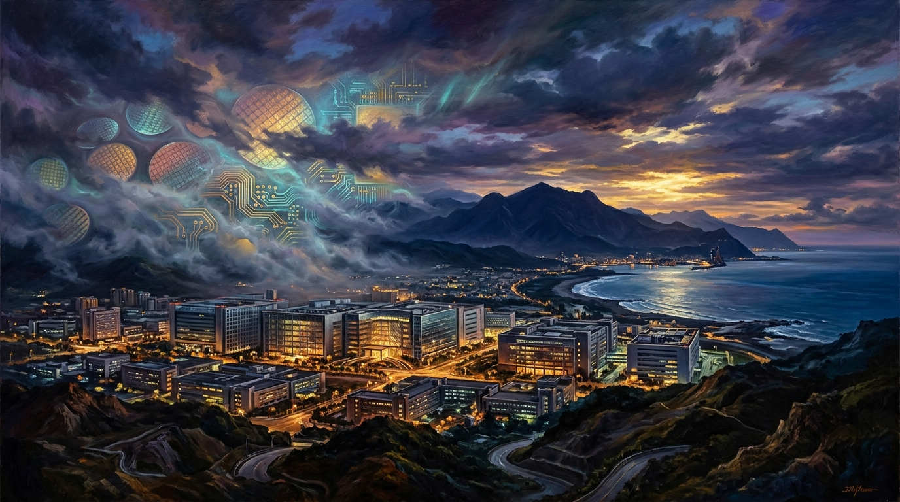

大系專案典藏 (Featured Series)
每一部專題大系均具備完整的萬字考證、高畫質油畫視覺、影音播客與互動時空地圖

全 18 章完結典藏
FormosaChronicles • 通史編年大系
《臺灣史》全卷
四百年島嶼史詩：從南島大航海到半導體矽島
以左鎮人、長濱文化與南島語族起筆，歷經荷西大員、鄭氏海王、清領渡海械鬥、牡丹社事件與乙未抗日、日治現代化浪潮、二二八與戰後白色恐怖，直至野百合民主破曉與台積電矽島傳奇。
18 篇長卷：每章萬字嚴謹史料考證與文獻專卷
18 支影片 & 播客：NotebookLM 雙人深度對談與 4K 影片
臺灣歷史地圖：Leaflet 互動式時空坐標導覽
#南島長濱
#熱蘭遮城
#鄭氏開臺
#牡丹社事件
#二二八事件
#矽島台積電
Formosa Gastronomy & Terroir
山海風土與四百年味覺身世
全 15 章特輯連載
FormosaGastronomy • 飲食風土大系
《舌尖上的臺灣》
以食物為密碼：解構四百年移民、拓墾與風土融合
食物是這座島嶼最誠實的記憶載體。從原住民小米、野豬與馬告火種，到大航海蔗糖、鹿港黑豬肉臊、臺南溫體牛、眷村牛肉麵、珍珠奶茶傳奇，直至米其林新臺菜世界舞台。
15 個飲食風土專題：橫跨史前到當代的 5 大味覺演進篇章
20+ 原生核心食材：小米、馬告、黑豆蔭油、溫體牛等身世解構
全臺風土食材地圖：坐標直達料理與食材原產地現場
#小米馬告
#大航海蔗糖
#鹿港肉臊
#善化溫體牛
#眷村牛肉麵
#米其林新臺菜
籌備規劃中
未來專題：《諸神之島：臺灣民俗信仰大系》
探索媽祖遶境香路、王爺王船平安祭、原住民族歲時祭儀與民間神明網絡。以數位文庫形式呈現島嶼世界級的無形文化資產。
敬請期待
數位文庫標準配備 (Standard Core Pillars)
每一篇專題均由嚴謹學術文獻、多媒體視聽與互動地理坐標構成
嚴謹考證史料卷
每章均獨立編撰史料考證專卷，完整附註第一手文獻、總督府檔案號與學術論文引用。
沉浸式專題長卷
萬字篇幅的深度專題論述，融會歷史宏觀結構與平民微觀記憶，提供最厚實的閱讀享受。
雙軌多媒體影音
4K 說明影片結合 NotebookLM 雙人深度播客對談，搭配精準字詞級繁中字幕與 YouTube 排程。
時空與風土地圖
Leaflet 互動式地圖，結合經緯度坐標，引導讀者實地走訪歷史發生現場與食材發源地。